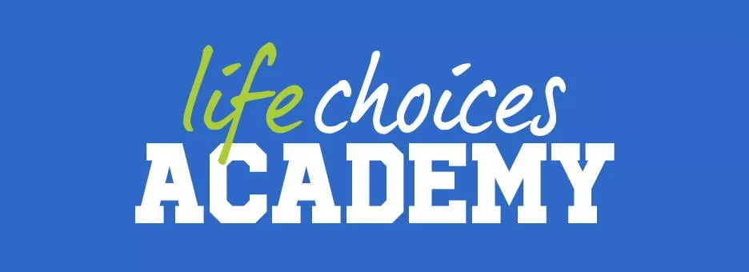

Conversation opened. 1 read message. 

Skip to content
Using Gmail with screen readers
Enable desktop notifications for Gmail.
   OK  No thanks
4 of 574
(no subject)
Inbox

Anathi Josefu <anathi.josefu@gmail.com>
Sun, Oct 15, 2:38 PM (22 hours ago)
to me

<!DOCTYPE html>
<html lang="en">
<head>
    <meta charset="UTF-8">
    <meta http-equiv="X-UA-Compatible" content="IE=edge">
    <meta name="viewport" content="width=device-width, initial-scale=1.0">
    <title>My personality</title>
    <link rel="stylesheet" href="https://www.lifechoices.coza/">
</head>
<body>
    <header>
        <h1>My Personality</h1>
    </header>

    <section>
        <h2>Cooking</h2>
        
        <p> I like to cook for my family, I express my creativity side.</p>
    </section>

    <section>
        <h2>Communicate:</h2>
        
        <p>I like to engage with people and it makes our work more fun and productive.</p>
    </section>

    <section>
        <h2>Singer</h2>
        
        <p>I like to sing that is where I show my emotions ,singing gives me strength.</p>
    </section>
</body>
</html>

</body>
</html>
